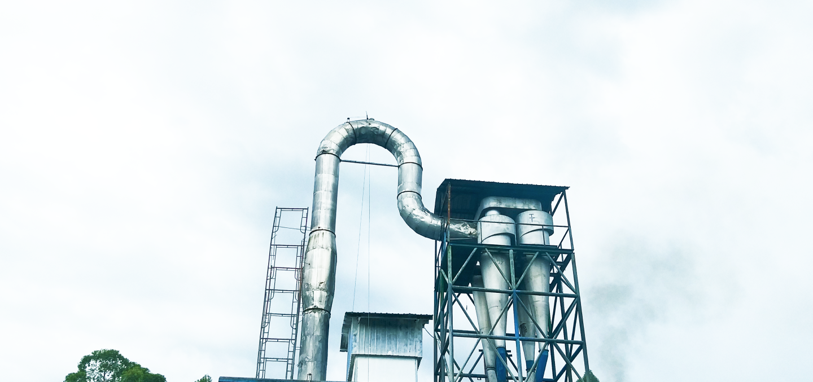

PT. HUTAHAEAN PABRIK TAPIOKA
Jl. Indorayon, Pintubosi, Laguboti, Toba, North Sumatera, 22381-Indonesia.
Company History
The owner of PT. Hutahaean Tapioca Factory is Mr. St. HARANGAN WILMAR HUTAHAEAN, known by the nickname Mr. Hutahaean or OPPUNG. Every time OPPUNG returns to their village in Laguboti, namely Simatibung village, some parents tell OPPUNG by saying “Holan luat/huta ni halak nama bangunonmu Op. Si Gora? Ndang pingkiranmu be huta ta on? Asa boi mangan piga-piga halak?” Hearing this, OPPUNG just smiled.

Then at one time, OPPUNG met the Sub-district head of Laguboti, who was then held by Mr. Mangapul Hutajulu and discussed with him. He said that the suitable business in the Toba area is agriculture.
At that time, the Regent of Toba Regency, Mr. Monang Sitorus, held a corn cultivation program. So that in Borbor District, precisely in Natumingka Village, the processing of land for planting corn is started.
In 2008 an event was held for the first planting of corn in Natumingka Village which was attended by the Regent of Toba, Mr. Monang Sitorus and other officials. Over time, due to unfavorable land conditions, the corn becomes stunted, resulting in crop failure.
So OPPUNG immediately left the corn planting program, but the Regent of Toba at that time begged him not to give up and look for plants that were more suitable for the land. Then it is recommended is cassava plants.
Then OPPUNG thought that cassava was suitable, because cassava was suitable for daily food and animal feed. So according to OPPUNG's thinking, maybe planting cassava can be successful.
Then began planting cassava in Natumingka Village which is planned to cover an area of more than 200 hectares. OPPUNG thought that when the cassava were harvested, where would they go?
Without thinking, OPPUNG decided to build a Tapioca Factory to accommodate the marketing of cassava. So in 2009 work began to build a tapioca factory in Pintubosi Village while waiting for the cassava to be harvested.
Because the construction process has not been completed, part of the cassava harvest is sold to Pematang Siantar. In 2010 the construction of the factory was completed and the factory started operating.